转化室内场景以使用 MtoA 进行渲染
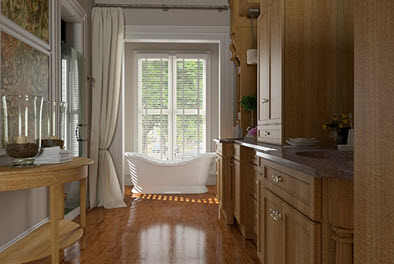
本教程详细介绍了转化已为另一渲染器设置的室内场景以使用 MtoA 进行渲染所需的工作流。场景设置和渲染的用时应不超过一小时。本示例中使用的场景来自此建筑室内装饰作品集。
另一个演示为房间照明的不同方法的教程位于此处。
整个工作流涵盖以下主题：
照明
着色
渲染设置
场景已从 3ds Max 导出为 .fbx 文件，并已使用 FBX 插件导入到 Maya 中。
| 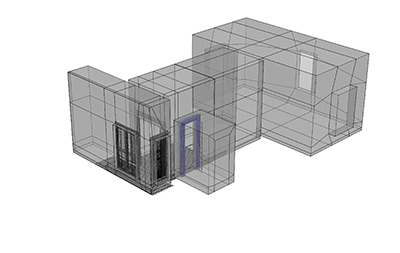 |
- 当您导入该场景时，将看到“大纲视图”(Outliner)和“Hypershade”窗口非常杂乱。因此在开始前，我们转到_“文件 > 优化场景”(File > Optimize Scene)_，删除所有空的组节点，并将几何体添加到一个组节点。
照明
场景的照明非常简单，在房间窗户的外面放置了 skydome_light 和灯光_引导口_。您可能需要增加 skydome_light 采样数以进行最终渲染（3 或 4）。
将 skydome_light 的_“曝光”(Exposure)_增加到 4 左右。
使用带方向性的灯光模拟从远端窗外照射进来的日光。将“角度”(Angle)稍微增大到 0.2 左右。这将使太阳光照射在地板上的阴影呈现更柔和的边缘。您可以根据需要增加_带方向性的_灯光的“采样数”(Samples)（3 应该足够）。启用 color_temperature，然后选择一个稍暖一些的色温，如 5000。
| 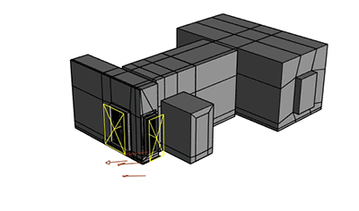 |
| 使用窗户外的灯光引导口（与 _skydome_light_）和表示太阳光的_带方向性的灯光_照亮场景 |
要预览照明将如何影响场景，可以为场景应用一个默认 standard_surface 着色器覆盖。这样可以有效创建渲染的“石膏预览”，并让您只专注于照明，而不必考虑着色。另外，Arnold 渲染视图窗口的 debug_shading 中还有一个_“照明”(Lighting)模式_。
| 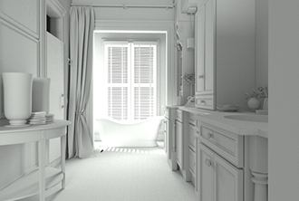 |
将 diffuse_samples 减小到 0 实际上将禁用间接照明。这在测试渲染场景中的直接照明时非常有用，并且会提高渲染速度。
| 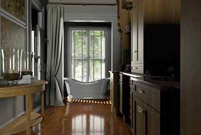 |
| _Diffuse_samples_：0（禁用间接照明） |
着色
场景自带 Maya 中的默认 Phong 着色器，它们显示在“Hypershade”窗口中。我们需要将这些着色器转化为 standard_surface 着色器。
| 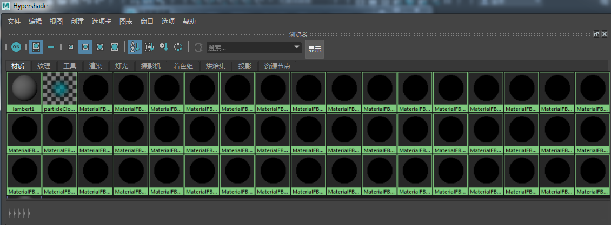 |
| 默认的 Maya 场景包含 Maya Phong 着色器并显示在“Hypershade”窗口中 |
- 选择一个 Phong 着色器，然后打开“属性编辑器”(Attribute Editor)。从“类型”(Type)下拉菜单中选择“Phong”，然后选择 standard_surface_。任何漫反射颜色信息都将传递给 _standard_surface 着色器。
| 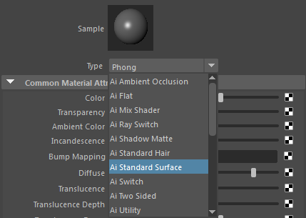 |
如果在 Phong 着色器中为“颜色”(Color) 指定了纹理，这些纹理将自动连接到 _standard_surface.base_color_，不需要额外的设置。
MtoA 提供了一个着色器转化脚本，以方便将多个着色器转化为 _standard_surface_。
地板着色器
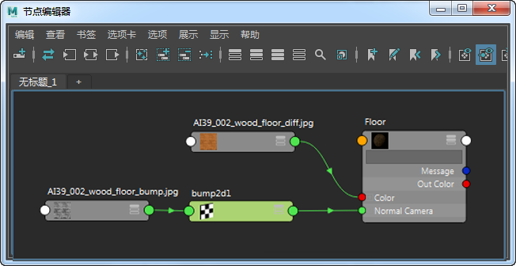
- 将漫反射颜色贴图连接到 standard_surface 着色器的 _base_color_。
- 将凹凸贴图连接到_“凹凸”(Bump)_属性。将 bump_depth 减小到一个较小值，如 0.03。
- 将 specular_weight 增大到 0.3，并将 specular_roughness 减小到 0.1，以使地板呈现出光泽的外观。
镜子
- 为镜子指定一个 standard_surface 着色器，并将其重命名为“Mirror”。
- 将 base_weight 增大到 1。
- 将 metalness 增大到 1。
窗帘
此处，我们将增加一些半透明度来实现从背后照亮窗帘的效果。
- 为窗帘指定一个 standard_surface 着色器，并将其重命名为“Curtain”。
- 将 sss 增大到 0.5 左右，并启用 thin_wall。
| 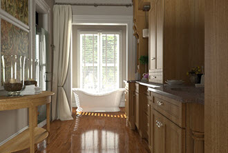 |  |
| 请参见 thin_wall 和 sss 对幕墙的影响 |
玻璃门
请确保多边形的面法线全部朝向正确的方向（这一点在使用 Arnold 渲染玻璃曲面时尤其重要）。
- 选择窗户几何体，并确保在属性编辑器的“Arnold”选项卡中禁用_“不透明”(opaque)_。
| 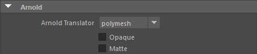 |
| 非不透明曲面（例如玻璃）的“不透明”(Opaque)开关已禁用 |
- 为玻璃门指定一个 standard_surface 着色器，并将其重命名为“Glass”。
- 将 base_weight 减小到 0。
- 将 specular_weight 增加到 1。
- 将 transmission_weight 增加到 1（这将使玻璃变得透明）。
- 将 specular_IOR 增加到 1.5（玻璃）。
- 您还可以通过向 transmission_color 添加细微的色调，非常轻松地为玻璃添加染色。
渲染设置
采样(Sampling)
- 对于最终渲染，*摄影机(AA)(Camera (AA))*设置增加到 6。
- diffuse_samples 也增加到 6，以减少房间中间接照亮区域的噪波。下图显示了 diffuse_samples 为 2（默认值）和 6 时渲染效果之间的差异。
| 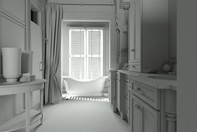 |  |
| 2 | 6 |
增加此值时应小心谨慎，因为渲染时间也会随之大幅增加。
有关去除噪波的详细信息以及教程，请单击此处
光线深度(Ray Depth)
漫反射光线深度
下面是 diffuse_ray_depth 为 1（默认值）和 4 时的渲染图像。您可以发现，窗帘周围的反弹光存在明显差异。
 |
|
| 1 | 4 |
请注意，渲染时间将根据光线漫反射反弹次数而线性增加，因此增大此值时应小心谨慎。
透射光线深度
在下面的图像中，您可以“清楚地”看到增加 transmission_ray_depth 后玻璃花瓶有何不同。
| 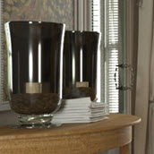 |  |
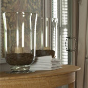 |
| 2 | 4 | 8 |
有关转化室内场景以使用 Arnold 进行渲染的教程到此结束。